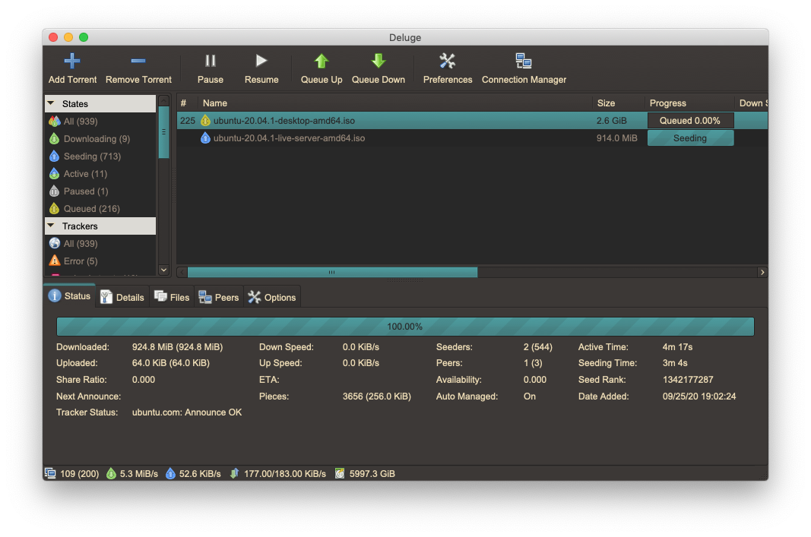
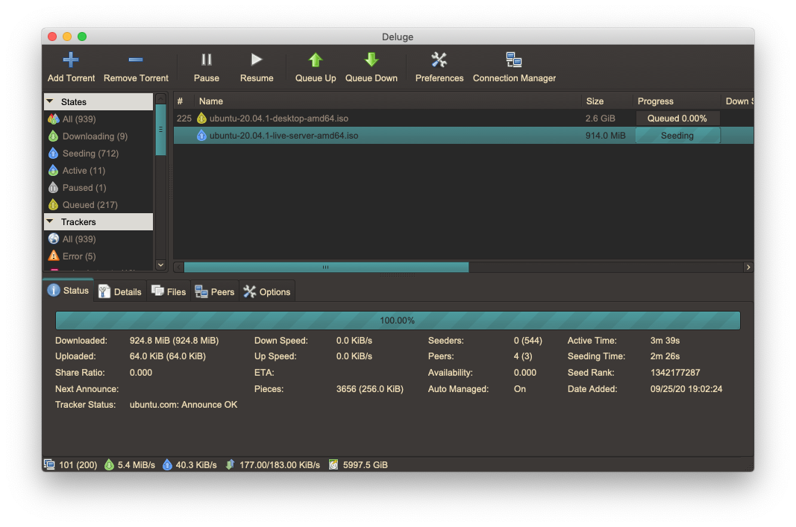

homepage - tags - github - site code
Dec 08 2019
dark themes in .Apps? sign me up
While using a system-wide theme between apps is easy on Linux via gtk, it's a little tough on Mac. Generally, apps written for OSX use styles similar to Mac apps for consistency. When an app doesn't do this you're stuck with using it as is - unless you're using an app which supports GTK on Linux, in which case you might just be able to find its gtkrc and edit it by hand.
If you've installed Deluge with MacPorts as the wiki suggests, you can set the theme name by editing the MacPorts `gtk-2.0/gtkrc`.
Otherwise, Mac apps generally live in /Applications, and are directories suffixed by .app (that's right, you can actually cd into applications). Applications have a certain file structure, which generally looks like this:
Deluge.app
└── Contents/
├── Info.plist
├── MacOS/
├── PkgInfo
└── Resources/
For most apps, static resources are usually kept in Resources/ (obviously) and Deluge has a themes directory it reads from here:
/Applications/Deluge.app/Contents/Resources/share/themes/
I used the clearlooks gtk theme as a reference, but a Custom theme can be made that Deluge.app will read from on startup:
/Applications/Deluge.app/Contents/Resources/share/themes/Custom/gtk-2.0/gtkrc
I've uploaded the gtkrc I'm using as a GitHub gist. The main difference between it and the other gtkrcs is the gtk-color-scheme attribute, which I updated to use colors based off of Gruvbox:
gtk-color-scheme = "base_color:#282828\nfg_color:#ebdbb2\ntooltip_fg_color:#bdae93\nselected_bg_color:#458588\nselected_fg_color:#282828\ntext_color:#928374\nbg_color:#3c3836\ntooltip_bg_color:#fabd2f"
And that's about it! Now, I have a real dark theme on Mac's Deluge.app.


~ tags : #ricing